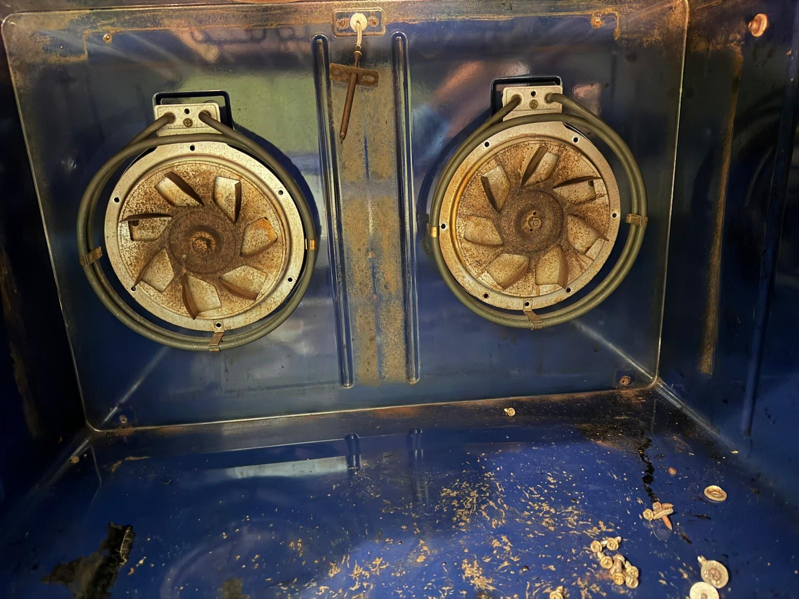
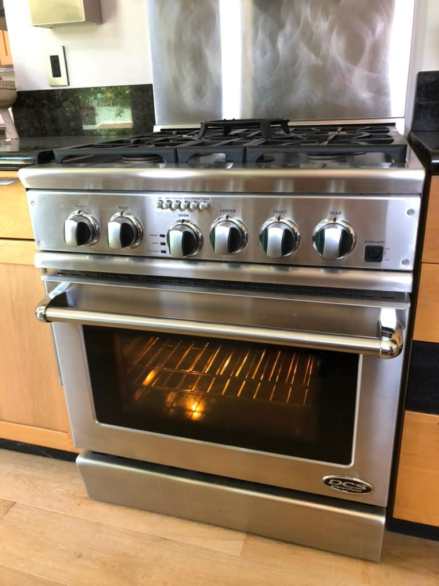

Irvine, CA
Professional DCS ranges, cooktops, and outdoor grills. We know the weak bake igniter, the sealed-burner spark, and the coastal corrosion. Same-day service available.
5.0 · 156 Google reviewsMon–Sat, 8am–7pm.

Family-owned since 2017 · Licensed, bonded & insured
Recent DCS work in Orange County: a convection fan motor and temperature sensor replacement on an oven in Irvine, a bake igniter replacement on a professional gas range in Newport Beach, and a spark module and bake igniter replacement on a range in Orange.

Irvine, CA

From our 156 verified 5-star Google reviews
AG came and fixed my oven so fast! He is extremely knowledgeable, he was able to accurately diagnose the problem in minutes. As he has the parts with him, he replaced the necessary part and cleaned up everything immediately. Thank you so much!!
Incredible service!! My oven is my emotional lifeline and this tech has saved me a few times!! Excellent service, reasonably priced and very respectful! He is my 100% go to for all things appliances.
Came in, identified the problem with our oven, and repaired it, all within 15 minutes. Amazing service, and amazing work.
Here is exactly what happens from your first call to a fully working DCS range.
Request a RepairEstimates vary by brand, part availability, and diagnosis. Final quote is provided before repair. See full pricing guide
DCS builds high-BTU professional cooking equipment for the home. Whether it is an all-gas range, a dual-fuel model, or an outdoor grill, the ignition and burner design carries across the lineup, and we service all of it.
Professional ranges fail in specific, recognizable ways. These are the DCS repairs our technicians handle most often on Orange County kitchens.
DCS, Dynamic Cooking Systems, was founded in Huntington Beach, California in 1989. It started by building commercial-quality cooking equipment and outdoor grills, then brought that professional performance into home kitchens. For an Orange County repair company, that heritage is familiar ground: DCS ranges have been in coastal OC kitchens since the brand began, and many of the units we service are the well-built older ones that were designed to be repaired, not replaced.
Fisher & Paykel, the New Zealand appliance maker, acquired DCS in 2004 and folded it into its professional line as "DCS by Fisher & Paykel." Indoor ranges and cooktops share engineering with the wider Fisher & Paykel catalog, while the outdoor grills are still California-built. In practice this means parts for the modern ranges are well supported, and the ignition and burner systems follow a consistent, serviceable design across the lineup.
What has not changed is what makes a DCS a DCS: high-BTU sealed burners, a true simmer, and a gas convection oven that relies on a healthy bake igniter. When that igniter weakens, the oven quits on bake first, which is exactly the repair we make most on these ranges. To be clear, we are not a DCS factory-authorized service center; we are an independent Orange County company that has serviced DCS ranges, cooktops, and grills for years.
DCS repairs use premium professional parts, but a new DCS range starts around $4,000, so for most faults repair is the clear financial choice.
| Repair Type | Typical Range |
|---|---|
| Service call / diagnostic: Orange County market average (often credited toward repair) | $95 – $150 |
| Oven bake igniter / glow bar (all-gas models) | $200 – $450 |
| Surface burner spark electrode / spark module | $200 – $400 |
| Oven temperature sensor | $150 – $350 |
| Dual-fuel oven bake element (electric-oven models) | $200 – $400 |
| Gas / safety valve | $350 – $700 |
| Convection fan motor | $250 – $500 |
| Outdoor grill igniter / burner valve | $200 – $450 |
Estimates vary by brand, part availability, and diagnosis. Final quote is provided before repair.
Our company diagnostic fee is a flat $99 in Orange County, credited toward the repair if you proceed. See our full appliance repair cost guide for broader Orange County pricing context.
Universal Appliances Repair Group Inc. provides DCS appliance repair across Orange County, California, servicing DCS (Dynamic Cooking Systems) professional ranges, rangetops, cooktops, wall ovens, and outdoor grills. Common repairs include an oven that will not bake, a weak bake igniter, and burners that click without lighting. We are not a DCS factory-authorized center; we are an independent repair company that services DCS regularly.
We serve Newport Beach, Irvine, Huntington Beach, Anaheim, Santa Ana, Costa Mesa, and surrounding cities, with same-day service available. Call (949) 629-5365 or book online to schedule a DCS repair visit.
The most common questions from DCS owners across Newport Beach, Irvine, Huntington Beach, and surrounding Orange County cities.
Still have a question? Call (949) 629-5365.
A DCS range often shares a kitchen with a Sub-Zero, a Wolf, or a Thermador. One call handles your entire luxury kitchen lineup.
Same-day service available. Call now or book online; a technician will confirm your appointment within the hour.